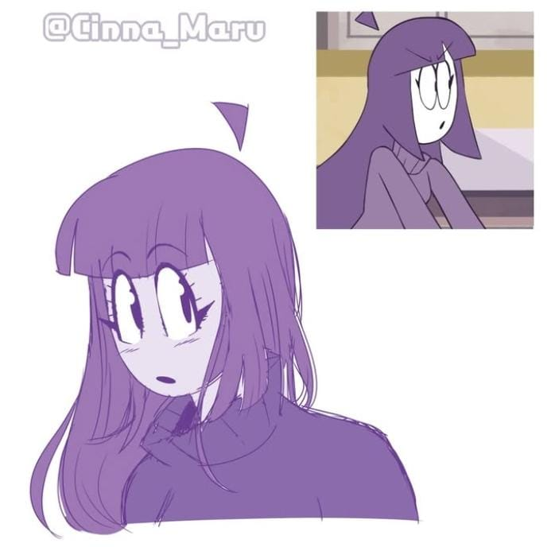
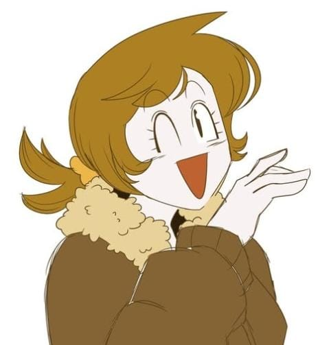

📖 ¿Qué incluye este estilo?
El estilo Sketch incluye ilustraciones con líneas visibles, trazos de lápiz o tinta digital y un toque informal. Ideal para representar personajes en desarrollo, escenas ligeras o arte espontáneo con alma.

"/// Expresión cruda y trazo sin filtro, directo del lápiz al alma."

"/// Un boceto que susurra más de lo que grita. Belleza en lo inacabado."

"/// La idea nace en un trazo. Todo lo demás es viaje."